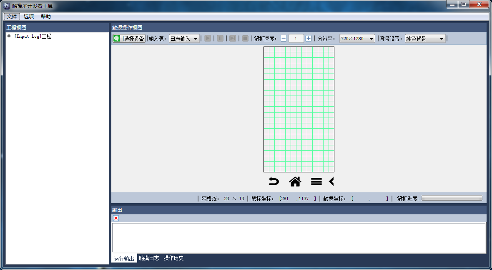
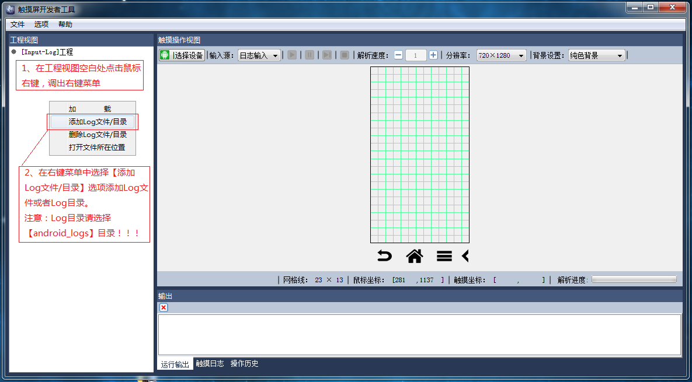
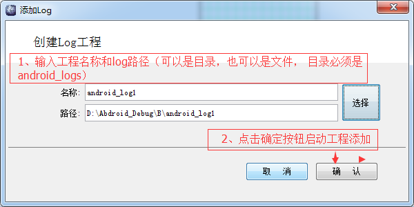
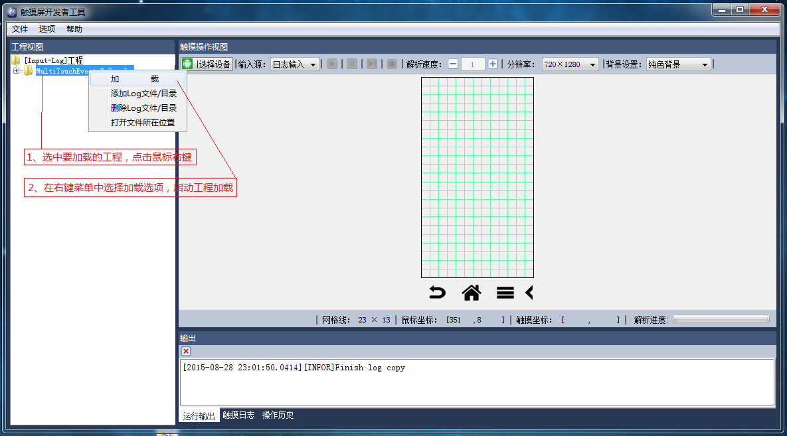
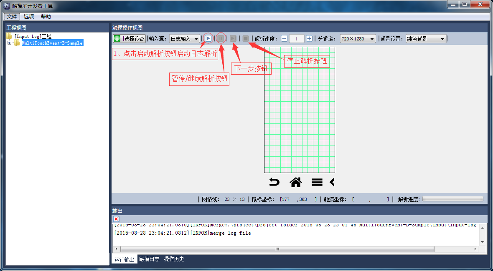
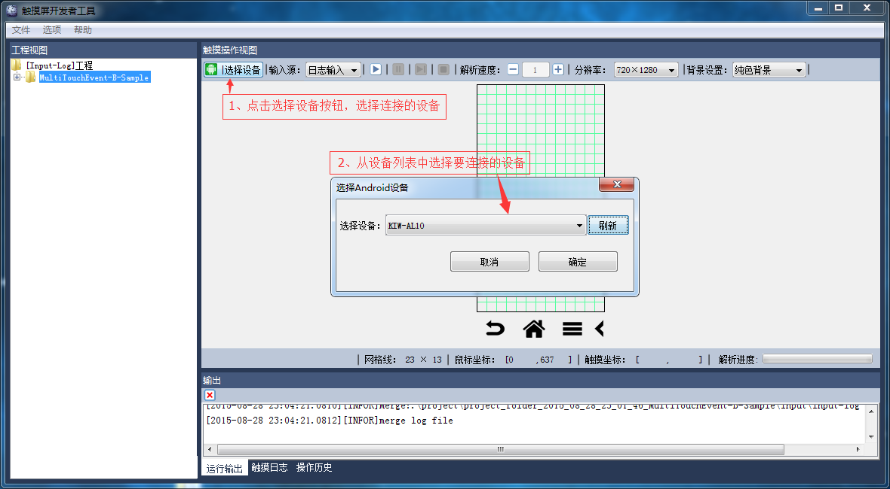
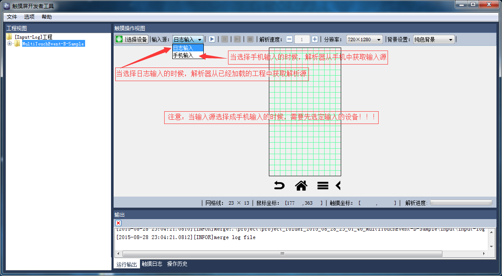
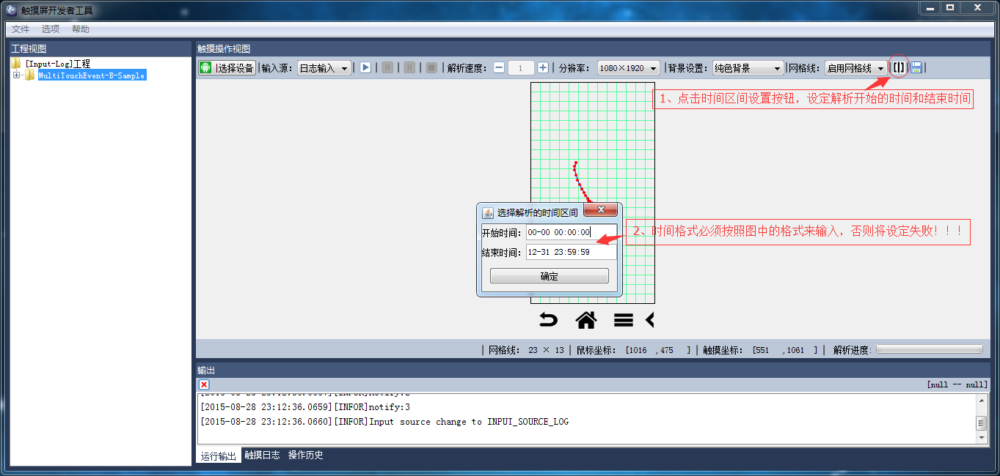
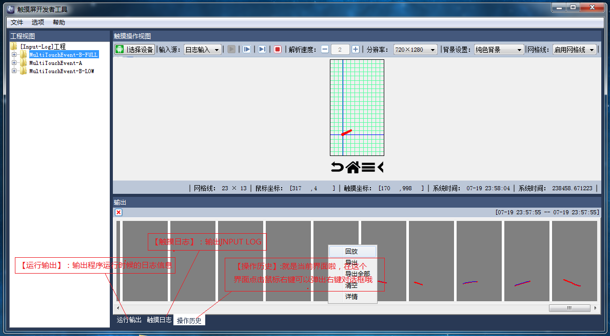
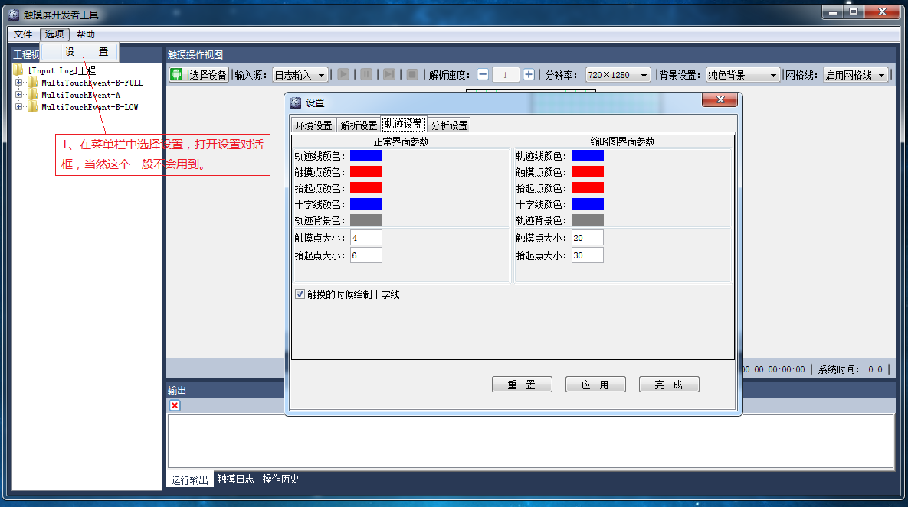

一、程序概述
首先来看下程序的各个部分是，下图是程序运行的界面：

二、、程序安装
1、双击安装程序，启动安装界面，在安装界面可以设置安装路径，安装过程会经历下面两个步骤：
安装过程如图2-2所示：
三、工程创建与加载
1、鼠标左键选中工程视图中的手机工程，点击鼠标右键，在弹出的右键菜单中选择【添加Log目录/文件】选项，创建工程，流程如图3-1所示：

图3-1 工程创建

图3-2 工程创建

图3-3 工程加载
四、解析控制
1、启动解析，只要点解界面上的开始解析按钮即可开始解析，启动解析的前提条件是将输入源选择成文件输入，并且已经加载工程，如图4-1所示：
2、解析的其他控制按钮如图4-1所示：

五、设备选择
1、设备选择的必要性——如下场景需要先连接手机设备
- 输入源设置成手机输入的时候
- 屏幕背景设置成手机屏幕的时候
- 动点击选择设备输入按钮的时候
设备选择界面如图5-1所示

六、输入源设置
输入源设置，主要是设置解析器的输入源，输入源分两种：日志输入和手机输入，当选择日志输入的时候，解析器从日志文件中获取输入源，当选择手机输入的时候，解析器从手机的Eventｌ Log中获取输入源， 输入源的设置如图6-1所示

七、解析时间设置
解析时间设定功能可以让你设定解析开始的时间和结束时间，当然，输入源必须是文件，而且程序搜索到的解析时间并不一定准确，因为同一个时间在input log中可能多次出现，使用的时候需要注意这一点，解析时间的设定方法如图7-1所示：

八、输出简介
目前输出视图中有三个输出窗口，第一个是窗口输出程序运行时候的日志信息，第二个窗口输出的是Input log，第三个窗口输出的是触摸操作的缩略图，值得一提的是，浙西缩略图是可以回放和导出的哦，双击缩略图，就可以回放了，图8-1就是输出视图的：

图7-1 输出视图
九、设置
设置对话框的启动如图10-1所示，在里面可以设置一些个性化的选项，一般估计是不会用到这个功能的

十、视屏演示
下面的动画演示一个基本的解析操作